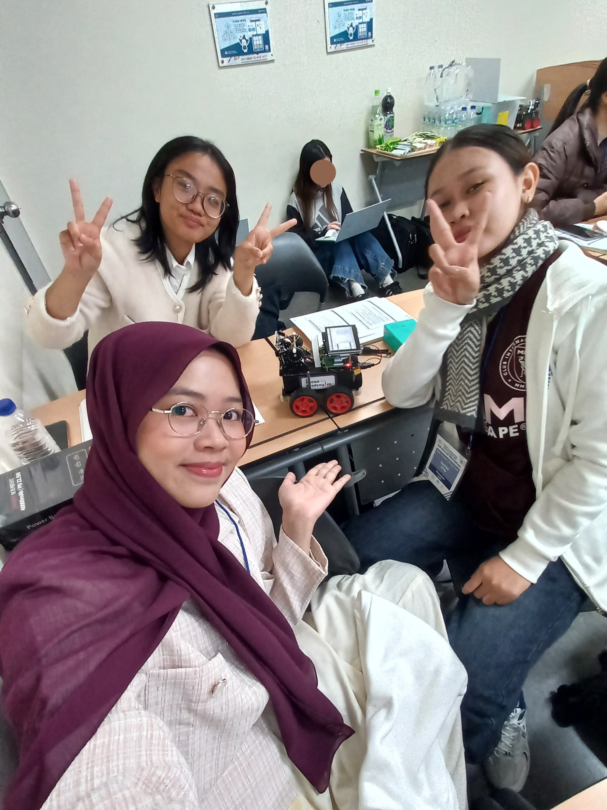
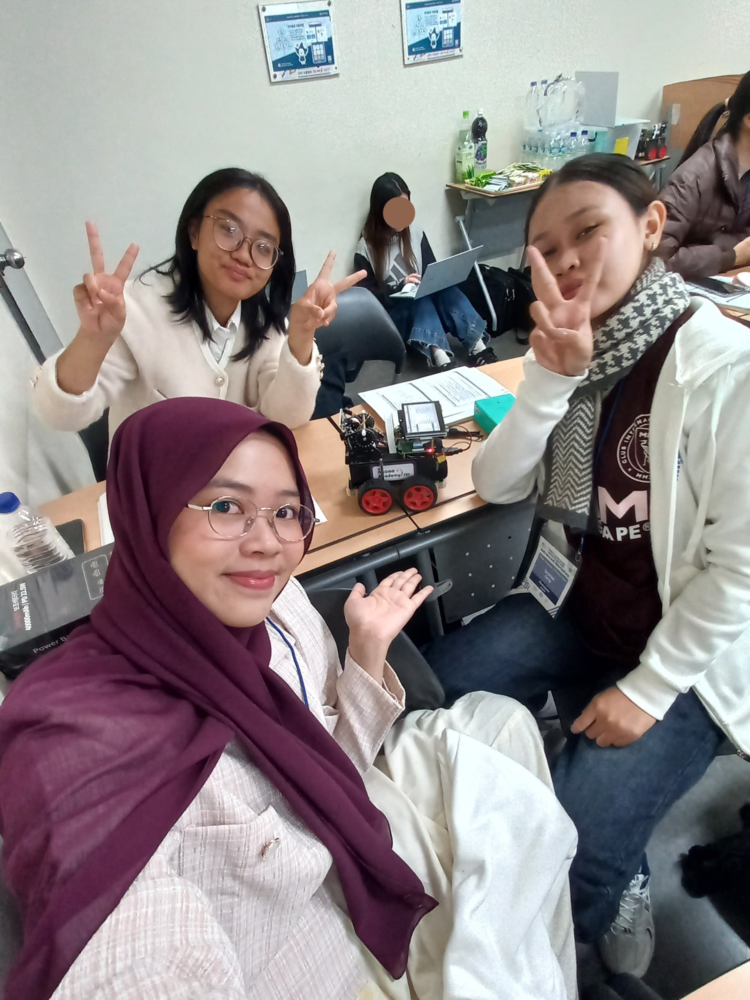

Digital Learning Path – 2025 Sookmyung UNESCO UNITWIN Advanced Workshop
Setelah melalui rangkaian pembelajaran dalam 2025 Sookmyung UNESCO UNITWIN Women in Digital and Entrepreneurial Leadership Program (WiDE), saya kembali mendapatkan kesempatan untuk melanjutkan pelatihan pada 2025 Sookmyung UNESCO UNITWIN Advanced Workshop, sebuah program lanjutan yang diselenggarakan di Kampus Sookmyung Women’s University, Korea Selatan.
Program ini diikuti oleh 56 mahasiswa terpilih dari tujuh universitas yang berasal dari empat negara—Indonesia, Laos, Vietnam, dan Kamboja. Setiap universitas mengirimkan delapan perwakilan mahasiswa yang telah lolos proses seleksi ketat oleh pihak Sookmyung Women’s University. Universitas yang berpartisipasi antara lain:
 

Seluruh kegiatan dilaksanakan selama 9–14 November 2025, dimulai dari orientasi, opening ceremony, rangkaian lectures, final project presentation, hingga closing ceremony. Workshop ini memberikan pengalaman pembelajaran intensif bersama peserta internasional, mempertemukan mahasiswa dari latar belakang budaya dan akademik yang beragam.
Pada kategori kelas Digital, peserta mempelajari berbagai materi lanjutan yang relevan dengan perkembangan teknologi masa kini, termasuk:
Sebagai puncak kegiatan, peserta mengerjakan sebuah final project berupa pengembangan autonomous car menggunakan model deep learning. Proyek ini kemudian dipresentasikan pada sesi final presentation, di mana performa autonomous car dievaluasi melalui visualisasi data menggunakan Python. Kegiatan ini bukan hanya menguji kemampuan teknis, tetapi juga keterampilan kolaborasi, analisis, dan penyampaian hasil kerja di depan peserta lintas negara.
Mengikuti Advanced Workshop ini memberikan saya pengalaman internasional yang memperkaya wawasan teknologi, memperkuat keterampilan pada bidang data dan AI, serta membuka jaringan akademik global yang berharga bagi pengembangan karier di bidang digital.